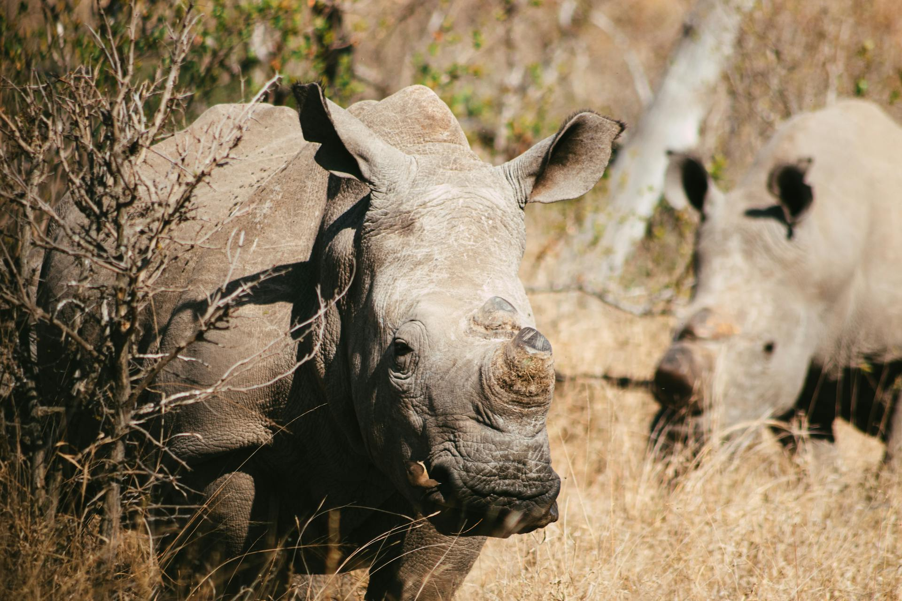

Ci prefiggiamo la finalità di salvaguardare l'ambiente naturale, soprattutto quello a limitata antropizzazione favorendo la coesistenza degli uomini con gli animali allo stato libero, salvaguardando ed enfatizzando il valore e i diritti di entrambi.
Lottiamo per abolire ogni forma di sfruttamento e violenza sugli animali e promuovere ogni forma di tutela della salute umana e della vita animale e vegetale nel suo complesso.
Ci proponiamo di promuovere l'ecologia locale volta alla conservazione della biodiversità, alla mitigazione delle conseguenze negative dei cambiamenti climatici ed a favorire la migliore convivenza tra uomo e natura, promuovendo e favorendo la coabitazione pacifica tra uomo e animali e incentivando altresì le soluzioni che risultano proficue per il benessere di entrambi.
Lottiamo per abolire ogni forma di sfruttamento e violenza sugli animali e promuovere ogni forma di tutela della salute umana e della vita animale e vegetale nel suo complesso.
Ci proponiamo di promuovere l'ecologia locale volta alla conservazione della biodiversità, alla mitigazione delle conseguenze negative dei cambiamenti climatici ed a favorire la migliore convivenza tra uomo e natura, promuovendo e favorendo la coabitazione pacifica tra uomo e animali e incentivando altresì le soluzioni che risultano proficue per il benessere di entrambi.
